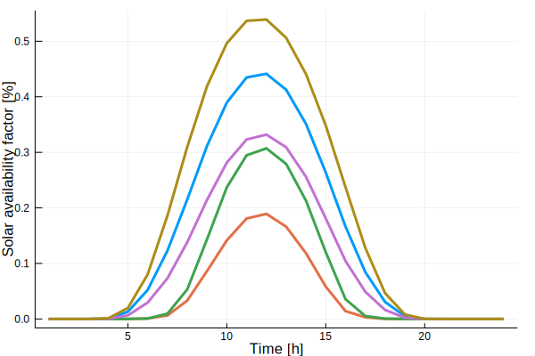

Clustering
run_clust() takes the full data and gives a struct with the clustered data as the output.
The input parameter n_clust determines the number of clusters,i.e., representative periods.
Supported clustering methods
The following combinations of clustering method and representations are supported by run_clust:
| Name | method | representation |
|---|---|---|
| k-means clustering | <kmeans> | <centroid> |
| k-means clustering with medoid representation | <kmeans> | <medoid> |
| k-medoids clustering (partitional) | <kmedoids> | <medoid> |
| k-medoids clustering (exact) [requires Gurobi] | <kmedoids_exact> | <medoid> |
| hierarchical clustering with centroid representation | <hierarchical> | <centroid> |
| hierarchical clustering with medoid representation | <hierarchical> | <medoid> |
For use of DTW barycenter averaging (DBA) and k-shape clustering on single-attribute data (e.g. electricity prices), please use branch v0.1-appl_energy-framework-comp.
ClustForOpt.run_clust — Function.run_clust(data::ClustData;norm_op::String="zscore",norm_scope::String="full",method::String="kmeans",representation::String="centroid",n_clust::Int=5,n_init::Int=100,iterations::Int=300,save::String="",attribute_weights::Dict{String,Float64}=Dict{String,Float64}(),get_all_clust_results::Bool=false,kwargs...)normop: "zscore", "01"(not implemented yet) normscope: "full","sequence","hourly" method: "kmeans","kmedoids","kmedoids_exact","hierarchical" representation: "centroid","medoid"
function runclust(datanormmerged::ClustDataMerged; method::String="kmeans", representation::String="centroid", nclust::Int=5, ninit::Int=100, iterations::Int=300, origk_ids::Array{Int64,1}=Array{Int64,1}(), kwargs...)
method: "kmeans","kmedoids","kmedoids_exact","hierarchical" representation: "centroid","medoid"
run_clust(data::ClustData,n_clust_ar::Array{Int,1};norm_op::String="zscore",norm_scope::String="full",method::String="kmeans",representation::String="centroid",n_init::Int=100,iterations::Int=300,save::String="",kwargs...)This function is a wrapper function around runclust(). It runs multiple number of clusters k and returns an array of results. normop: "zscore", "01"(not implemented yet) normscope: "full","sequence","hourly" method: "kmeans","kmedoids","kmedoidsexact","hierarchical" representation: "centroid","medoid"
Opt Types
ClustForOpt.FullInputData — Type.FullInputData
ClustForOpt.ClustData — Type. ClustData{region::String,K::Int,T::Int,data::Dict{String,Array},weights::Array{Float64},mean::Dict{String,Array},sdv::Dict{String,Array}} <: TSData- region: optional information to specify the region data belongs to
- K: number of periods
- T: time steps per period
- data: Dictionary with an entry for each attribute
[file name (e.g technology)]-[column name (e.g. location)], Each entry of the dictionary is a 2-dimensionaltime-steps T x periods K-Array holding the actual value - weights: 1-dimensional
periods K-Array with the absolute weight for each period. E.g. for a year of 365 days, sum(weights)=365 - mean: Dictionary with a entry for each attribute
[file name (e.g technology)]-[column name (e.g. location)], Each entry of the dictionary is a 1-dimensionalperiods K-Array holding the shift of the mean - sdv: Dictionary with an entry for each attribute
[file name (e.g technology)]-[column name (e.g. location)], Each entry of the dictionary is a 1-dimensionalperiods K-Array holding the standard deviation - delta_t: 2-dimensional
time-steps T x periods K-Array with the temporal duration Δt for each timestep in [h] - k_ids: 1-dimensional
original periods I-Array with the information, which original period is represented by which period K. If an original period is not represented by any period within this ClustData the entry will be0.
ClustForOpt.ClustDataMerged — Type.ClustDataMerged
ClustForOpt.ClustResultAll — Type.ClustResultAll
ClustForOpt.ClustResultBest — Type.ClustResultBest
ClustForOpt.ClustResultSimple — Type.ClustResultSimple
Example running clustering
using ClustForOpt
# load ts-input-data
ts_input_data = load_timeseries_data(normpath(joinpath(@__DIR__,"..","..","data","TS_GER_1")); T=24, years=[2016])
ts_clust_data = run_clust(ts_input_data).best_results
using Plots
plot(ts_clust_data.data["solar-germany"], legend=false, linestyle=:solid, width=3, xlabel="Time [h]", ylabel="Solar availability factor [%]")
savefig("clust.svg")/home/travis/.julia/packages/GR/KGODl/src/../deps/gr/bin/gksqt: error while loading shared libraries: libQt5Widgets.so.5: cannot open shared object file: No such file or directory
connect: Connection refused
GKS: can't connect to GKS socket application
Did you start 'gksqt'?
GKS: Open failed in routine OPEN_WS
GKS: GKS not in proper state. GKS must be either in the state WSOP or WSAC in routine ACTIVATE_WS